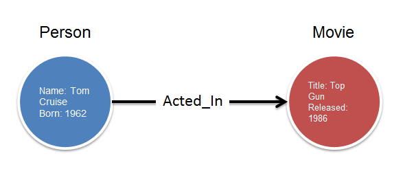
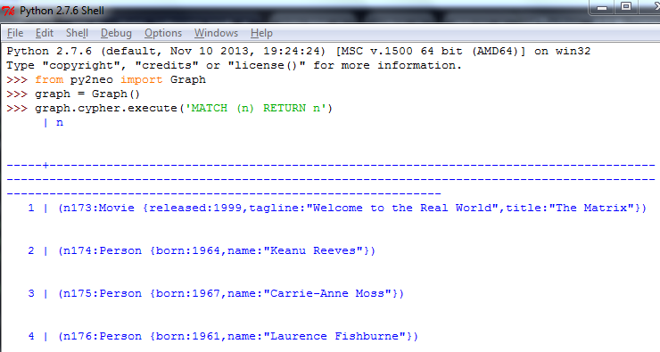
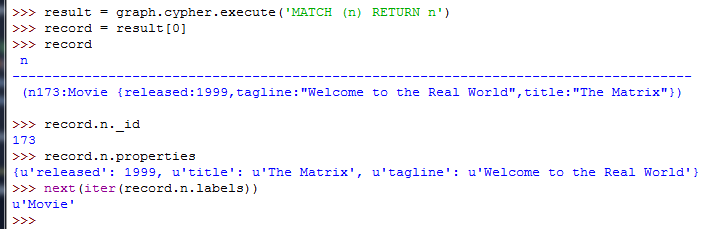

用可视化的方式来展示网络关系图是一件挺有趣的事情，在选定用cytoscape.js来显示neo4j图形数据库的数据后我做了一个原型，并用下面三篇博客来记录了做原型的过程。
- 用cytoscape.js展示neo4j网络关系图 - 1. Flask
- 用cytoscape.js展示neo4j网络关系图 - 2. py2neo（这篇博客）
- 用cytoscape.js展示neo4j网络关系图 - 3. cytoscape.js
要完成的功能
要把neo4j数据库里面的Movie数据正确的显示到前端，我们需要完成如下的功能。
上一篇博客介绍了如何搭建基于Flask的简单网站，现在我们要用py2neo来从neo4j server里取出Movie数据库的所有节点(Node)和节点之间的关系(Relationship)。
Neo4j支持一种叫做Cypher的查询语言。如果把Neo4j看作MySQL的话，Cypher相当于SQL语言，而且它和SQL语言很类似。
图(Graph),节点(Node)和关系(Relationship)

这就是一个简单的图(Graph)，包含两个节点和一个关系。节点可以是任何事物（比如说：人，电影，设备等等），它有一些属性（properties，上图圆圈里的东西，如：Name: Tom Cruise）和标签(Label，上图圆圈顶上的东西，如：Person)。
两个节点间的线就是关系(Relationship)，“Acted_In”是关系类型(Relationship Type)。关系也可以有属性（properties），这里我们没有给关系加任何属性。
关系有自己的开始节点（start node）和结束节点（end node）。这里，开始节点就是Person(Tom Cruise)，结束节点就是Movie(Top Gun)。
这种关系图要表达的信息看起来是相当直观的。上图的意思就是：一个生于1962年叫Tom Cruise的人，参演了影片《Top Gun》，影片在1986年上映。
Cypher
Cypher是noe4j数据库的查询语言。你可以用它来增删改查noe4j的节点和关系。目前我们只需要用它来查询。
Cypher语言非常形象。比如要查询上面的两个节点，语句是这样的：
1 | match (p:Person {name: 'Tom Cruise'})-[:ACTED_IN]->(m:Movie {title: 'Top Gun'}) |
match和return是关键字，p和m可以看作变量，p:后面是p节点的Label（Person）及其properties（name: ‘Tom Cruise’）。
如果要查询Tom Cruise参演的所有影片节点，语句是这样的：1
2match (:Person {name: 'Tom Cruise'})-[:ACTED_IN]->(m)
return m
我们的目的是显示Movie数据库所有节点和关系，所以会用到下面的查询语句。
- 选择所有节点：
MATCH (n) RETURN n - 选择所有关系：
MATCH ()-[r]->() RETURN r
py2neo
上一篇博客我们已经安装好py2neo，现在可以试试用它来执行Cypher查询。注意一定要照着上一篇博客先把neo4j server启动。我们用python shell来运行三个命令。

首先import了py2neo。然后初始化代码graph = Graph()会直接去连本机的neo4j server 默认的URI http://localhost:7474/db/data/。最后我们执行了Cypher语句MATCH (n) RETURN n。返回的结果包括两种节点（Movie, Person）。
下面我们来看看如何从结果中取值。

例子里cypher的结果存到result中，并取出第一个结果放入record。然后取得了节点的id，属性（properties），标签（Label）。
下一篇博客将会讲如何把我们用py2neo获得的节点及关系用cytoscape.js来显示到网页上。